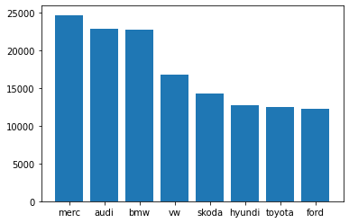
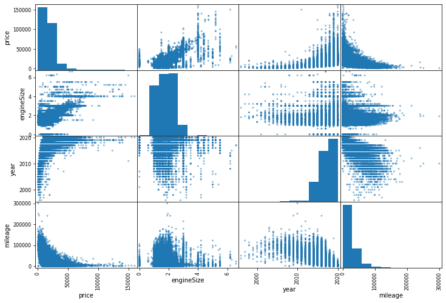

3. Exploration
3. Exploration¶
I was wondering what makes have the most expensive cars on average, so I grouped the dataset by make en calculated the averages.
grouped_df = df.groupby("make")
mean_df = grouped_df.mean()
mean_df = mean_df.reset_index().sort_values(by=['price'], ascending=False)
mean_df
| make | year | price | mileage | tax | mpg | engineSize | |
|---|---|---|---|---|---|---|---|
| 4 | merc | 2017.301663 | 24707.898676 | 21629.260918 | 130.015476 | 55.133015 | 2.051669 |
| 0 | audi | 2017.100587 | 22898.304693 | 24353.617506 | 126.130110 | 50.786431 | 1.920307 |
| 1 | bmw | 2017.078371 | 22717.397940 | 25211.373689 | 131.654120 | 56.415084 | 2.113189 |
| 7 | vw | 2017.256410 | 16839.383750 | 21960.184216 | 113.103763 | 53.744575 | 1.600321 |
| 5 | skoda | 2017.501208 | 14260.022541 | 20319.133022 | 117.151505 | 56.572178 | 1.435994 |
| 3 | hyundi | 2017.105198 | 12745.660291 | 21778.461538 | 120.451559 | 53.848170 | 1.454665 |
| 6 | toyota | 2016.745419 | 12509.233403 | 23029.774857 | 94.837038 | 63.026419 | 1.466092 |
| 2 | ford | 2016.863606 | 12281.365631 | 23567.129620 | 112.765755 | 57.912514 | 1.358428 |
plt.bar(mean_df['make'], mean_df['price']);

Cool, but not so useful because the ‘make’ variable is not featured in predictions. Let’s check for some correlations now.
corr_matrix = df.corr()
corr_matrix["price"].sort_values(ascending=False)
price 1.000000
engineSize 0.662701
year 0.508412
tax 0.346737
mpg -0.339112
mileage -0.441013
Name: price, dtype: float64
from pandas.plotting import scatter_matrix
attributes = ["price", "engineSize", "year", "mileage"]
scatter_matrix(df[attributes], figsize=(12, 8));

There seems to be quite some correlation, which is good. EngineSize and year look like the best predictor for car price. mpg and mileage seem to be negatively correlated.